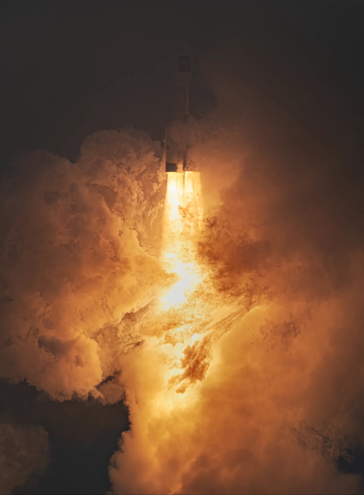
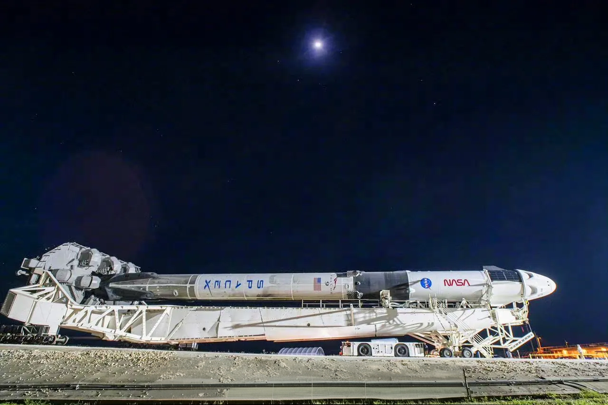
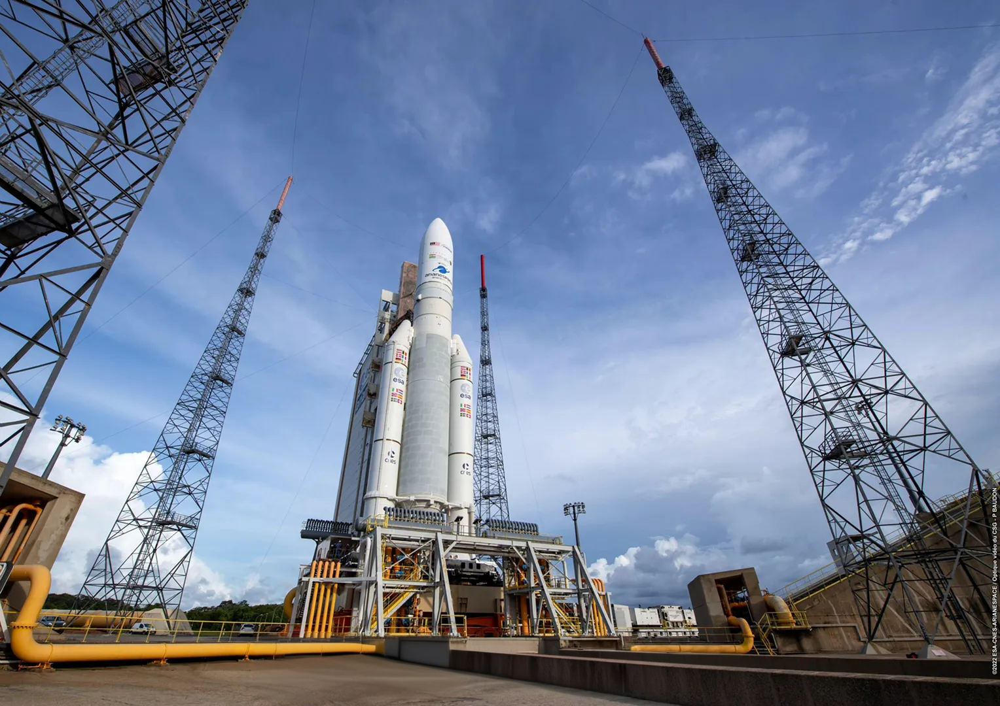

运载火箭
进入太空的桥梁
运载火箭是人类进入太空的唯一工具，是将卫星、探测器、航天员和货物送入太空的关键载体。从早期的V-2火箭到现代的可重复使用火箭，运载火箭技术经历了翻天覆地的变化，推动着人类太空探索的边界不断扩展。
当今世界，美国、中国、俄罗斯、欧洲等国家和地区都拥有自己的运载火箭系列，不断追求更高的运载能力、更低的发射成本和更高的可靠性。可重复使用火箭技术的突破，更是为未来大规模太空活动奠定了基础。


猎鹰9号 (Falcon 9)
SpaceX公司研发的中型运载火箭，是世界上首个实现第一级垂直回收并重复使用的火箭，大幅降低了发射成本。
技术参数
- 高度：70米
- 直径：3.7米
- 近地轨道运载能力：22.8吨
- 地球同步转移轨道运载能力：8.3吨

长征五号 (Long March 5)
中国研制的大型运载火箭，是目前中国运载能力最强的火箭，主要用于发射大型卫星和空间站舱段。
技术参数
- 高度：56.97米
- 直径：5米
- 近地轨道运载能力：25吨
- 地球同步转移轨道运载能力：14吨

阿丽亚娜5号 (Ariane 5)
欧洲航天局研发的大型运载火箭，主要用于商业卫星发射，是世界上可靠性最高的火箭之一。
技术参数
- 高度：59米
- 直径：5.4米
- 近地轨道运载能力：21吨
- 地球同步转移轨道运载能力：10.5吨
未来发展趋势
完全可重复使用
SpaceX的星舰和蓝色起源的新格伦等新一代火箭正致力于实现完全可重复使用，将大幅降低太空进入成本，使大规模太空活动成为可能。
更强大的运载能力
NASA的太空发射系统(SLS)和SpaceX的星舰等超重型火箭正在开发中，将具备前所未有的运载能力，支持载人月球和火星任务。
绿色推进技术
甲烷燃料等更环保的推进技术正在兴起，不仅性能优异，而且相比传统燃料更加清洁，为可持续太空探索提供支持。